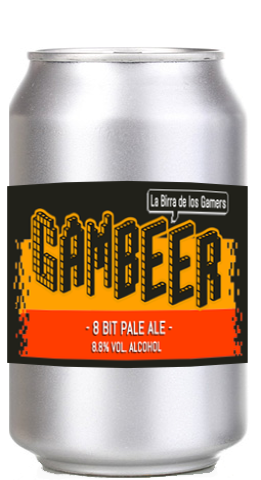
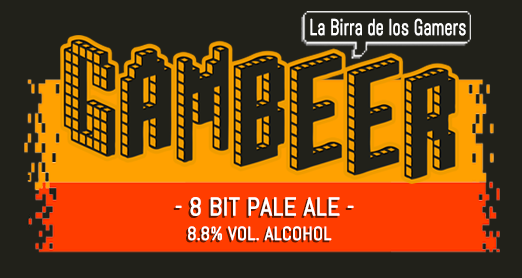
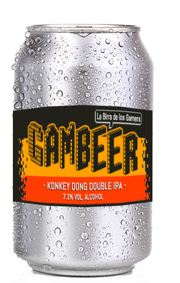
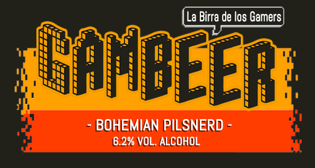
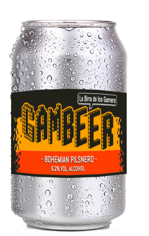

▞▞ NUESTRAS CERVEZAS ▚▚
Todas elaboradas con ingredientes de primera calidad, sin extractos ni aditivos, de manera natural y cuidando al detalle cada proceso de su fabricación.
Konkey Dong Double Ipa
7.3% Vol. Alcohol - IBU 50
La favorita de la Casa.
Cerveza de color dorado profundo, un refrescante e intenso amargor rematado con un juego de aromas frutales que te va a volar la cabeza.


8 Bit Pale Ale
8.8% Vol. Alcohol - IBU 18

La preferida de nuestros nerds.
Cerveza de cuerpo balanceado, con un intenso juego de sabores acaramelados y el amargor preciso. Su sabor y textura la hacen una cerveza muy versátil, disfrútala en invierno y verano.


Bohemian Pilsnerd
6.2% Vol. Alcohol - IBU 16

Ideal para cortar semana.
Cerveza rubia de cuerpo liviano, refrescante, con un agradable sabor a cereales, aromas frutales y suave amargor.
